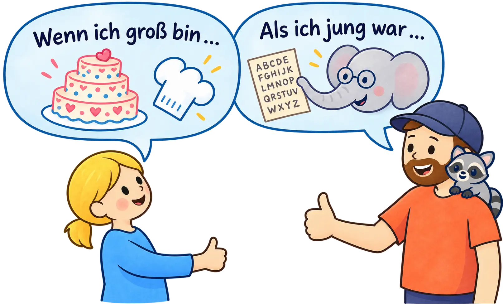

Echte Menschen · echte Wege
Berufe entdecken
Was wollte jemand als Kind werden? Was ist daraus geworden? Und was macht die Person heute?

Kurz lesen
Erzieherin
Viel mehr als Spielen
Sie begleitet Kinder beim Großwerden. Ihr eigener Weg führte über mehrere andere Berufe.
Zum Interview